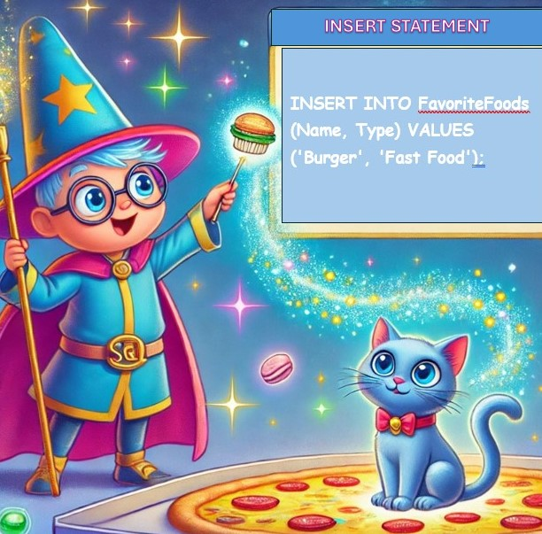

Welcome to the magical world of SQL! Meet Sammy, your friendly SQL wizard. Sammy will guide you step by step to learn the magic of SQL commands!
Sammy says: "SELECT is the magic spell that helps you choose what you want to see from your database."
SELECT * FROM FavoriteFoods;
Example: If you want to see all the foods in your database, use this command. The * means "show everything!"
üì∫ Animation: Watch as your database magically displays all your favorite foods!
Sammy says: "INSERT is like adding a shiny new toy to your treasure chest!"
INSERT INTO FavoriteFoods (Name, Type) VALUES ('Burger', 'Fast Food');
Example: Add a new item to your database. In this case, we’re adding "Burger" as a type of "Fast Food."
üéÆ Interactive: Click a button to watch a burger appear in your food table!
Sammy says: "DELETE removes something you no longer want. Just like making old toys disappear, POOF!"
DELETE FROM FavoriteFoods WHERE Name = 'Tacos';
Example: Remove "Tacos" from your list of favorite foods. With this command, they’ll vanish from your database like magic!
⚡ Animation: Watch tacos disappear from the table in an instant!